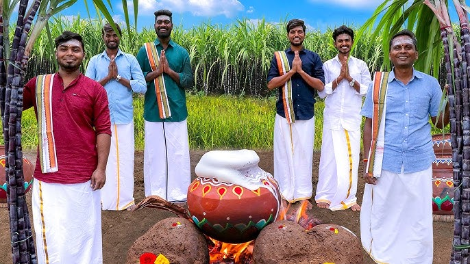
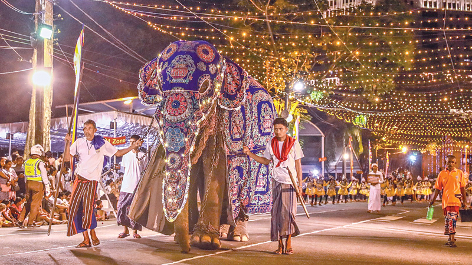
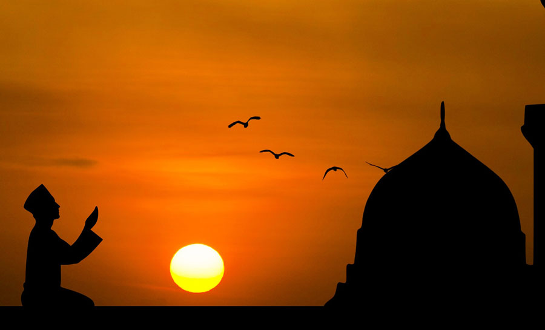
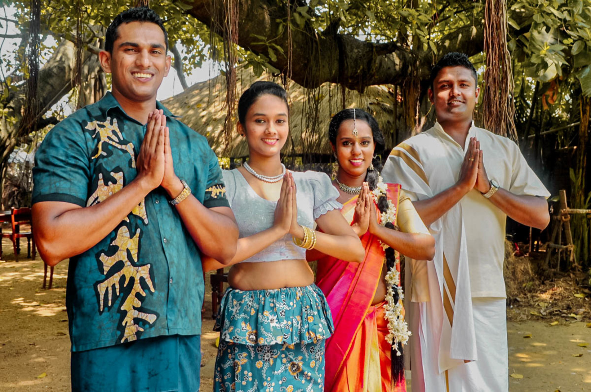
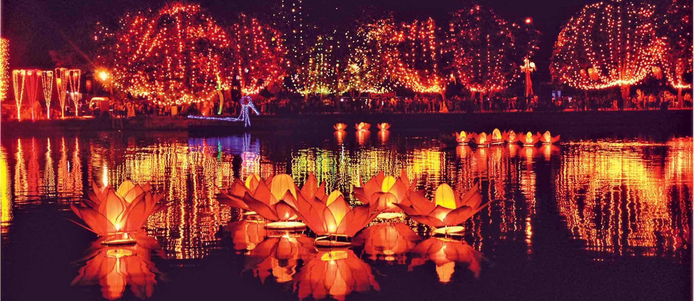
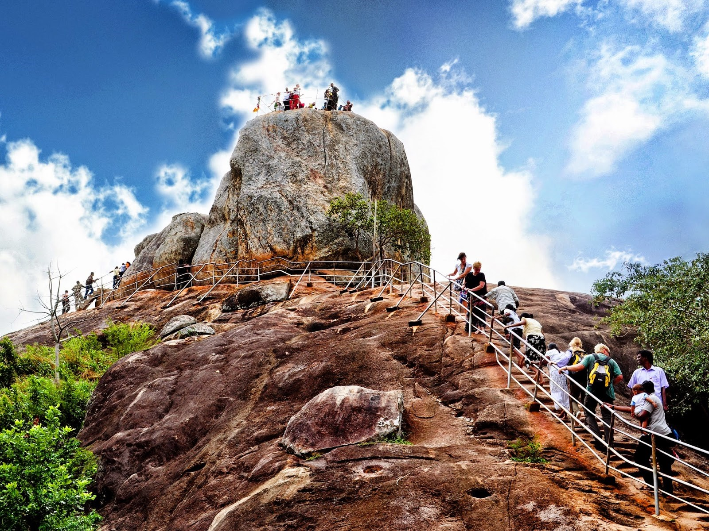
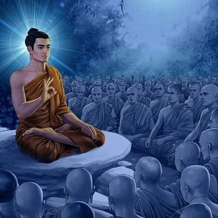
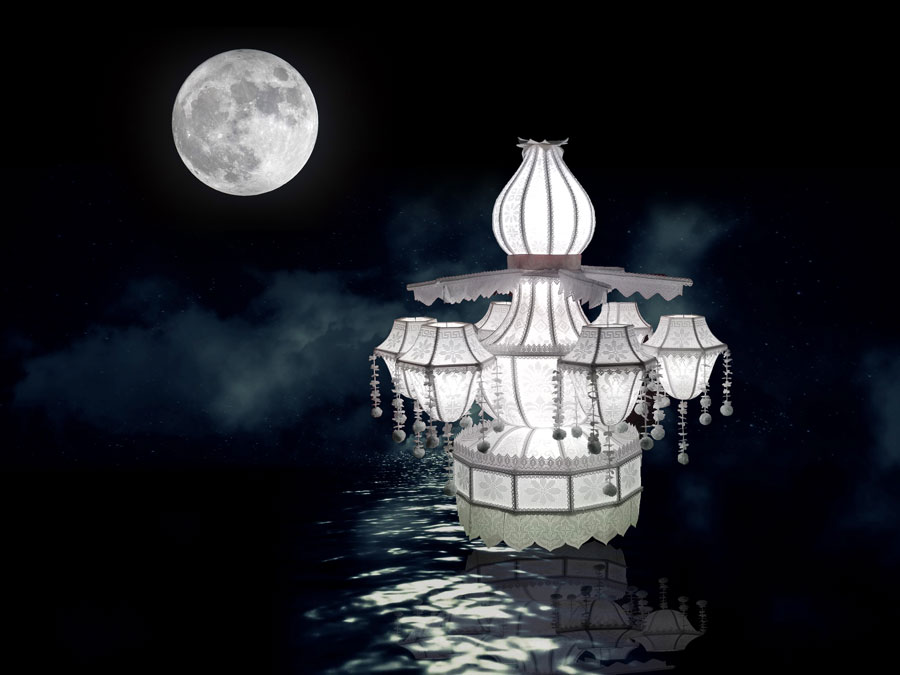
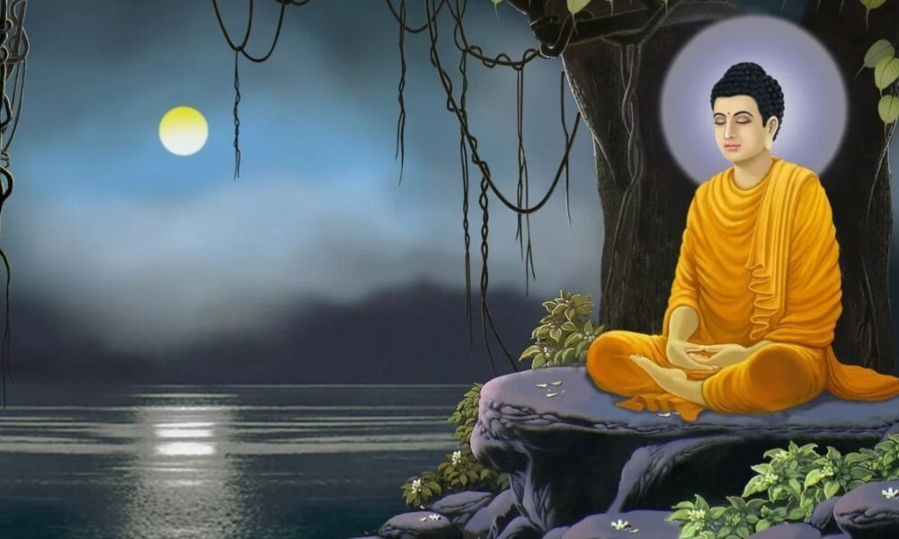

January - Thai Pongal
Thai Pongal is a harvest festival celebrated by Tamil people in Sri Lanka. It is dedicated to the Sun God and marks the beginning of the Tamil month of Thai.
February - Navam Perahera
Navam Perahera is an annual procession held in Colombo, Sri Lanka, to honor the sacred relics of the Buddha. It features traditional dancers, drummers, and beautifully adorned elephants.
March - Ramadan
Ramadan isn't actually a festival itself, but a holy month observed by Muslims worldwide. It's a time of spiritual reflection, fasting from dawn to dusk, and increased prayer and devotion. Muslims aim to become closer to God and develop self-discipline through fasting. Ramadan concludes with Eid al-Fitr, a joyous occasion to celebrate the breaking of the fast and mark the end of the holy month
April - Sinhala and Tamil New Year
Sinhala and Tamil New Year, also known as Aluth Avurudda in Sinhala and Puthandu in Tamil, is a cultural festival celebrated by Sinhalese and Tamil people in Sri Lanka. It marks the beginning of the new year and is a time for family gatherings and traditional customs.
May - Vesak
Vesak, also known as Buddha Jayanti, is the most important Buddhist festival in Sri Lanka. It commemorates the birth, enlightenment, and death of the Buddha. Temples are decorated with colorful lanterns, and devotees engage in acts of charity.
June - Poson Full Moon Poya
Poson Full Moon Poya commemorates the introduction of Buddhism to Sri Lanka by Arahat Mahinda, the son of Emperor Ashoka of India. It is celebrated with religious observances and pilgrimages to important Buddhist sites.
July - Esala Perahera

Esala Perahera is a grand festival held in Kandy, Sri Lanka, to honor the sacred tooth relic of the Buddha. It features colorful processions with traditional dancers, drummers, and elaborately decorated elephants.
August - Nikini Full Moon Poya
Nikini Full Moon Poya commemorates the first Buddhist council held after the Buddha's passing away. It is a time for Buddhist observances and reflection on the teachings of the Buddha.
September - Binara Full Moon Poya
Binara Full Moon Poya commemorates the visit of the Buddha to heaven to preach to his mother who had been reborn there. It is a time for Buddhist devotions and acts of merit-making.
October - Vap Full Moon Poya
Vap Full Moon Poya commemorates the end of the three months rainy retreat period (Vas) observed by Buddhist monks. It is a time for renewing vows and intensifying spiritual practice.
November - Deepavali (Diwali)

Deepavali, also known as Diwali, is the festival of lights celebrated by Hindus in Sri Lanka. It symbolizes the victory of light over darkness and good over evil. Homes and temples are decorated with oil lamps, and fireworks are lit to mark the occasion.
December - Christmas

Christmas is celebrated by Christians in Sri Lanka to commemorate the birth of Jesus Christ. It is a time for religious observances, gift-giving, and festive gatherings with family and friends.